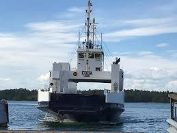

Ebba
Ebba-färjan
Hur fick färjan sitt namn?
Bilfärjan Ebba fick sitt namn från den tidigare grevinnan på ornö. Hennes namn var Ebba Stenbock. Ebba Stenbocks dotter Katarina Stenbock bor på Ornö, på en stor och mycket fin gammal tomt med mycket vackra och stora hus.
När körs Ebba?
Ebba-färjan körs framförallt på sommaren, men även på våren och hösten. När det blir vinter och is på vattnet så tar kurir över då Ebba inte är tålig att bryta is på samma sätt som Kurir. Om Kurir skulle vara trasig under vintern så måste man fixa en isbrytare så att Ebba kan köra istället. På Ebba har man alltid två man på däck och en i styrhytten.